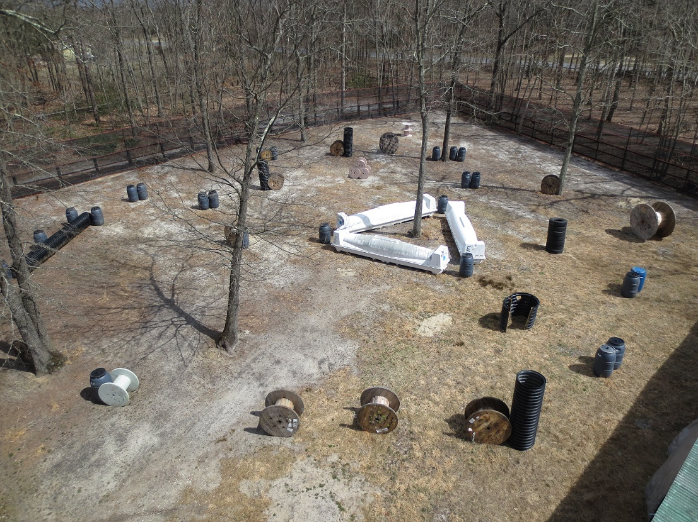
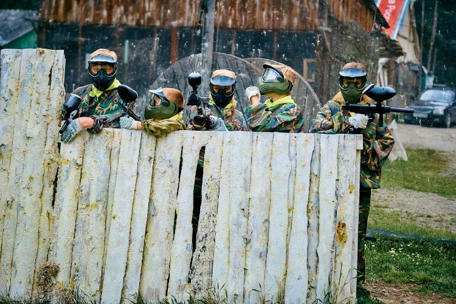
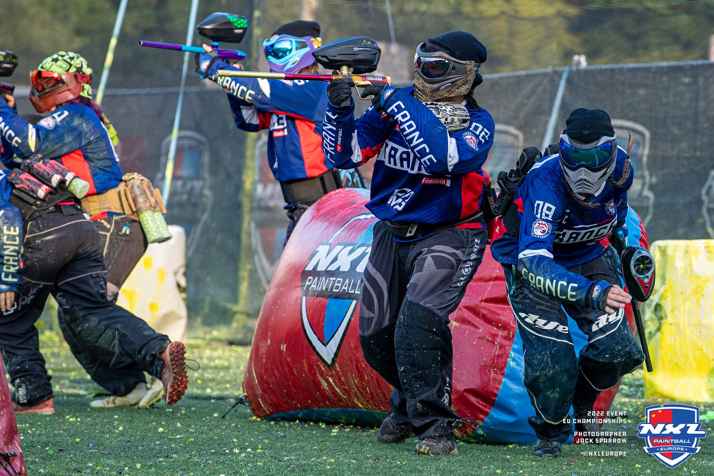

История пейнтбола
Пейнтбол, как вид спортивно-развлекательного мероприятия, впервые зародился в США в начале 1980-х годов. Суть игры заключается в командных баталиях с использованием специальных пистолетов, стреляющих капсулами с краской. Происхождение идеи пейнтбола связано с Чарльзом Гейнсом, энтузиастом активного отдыха, искавшим способы разнообразить игры на свежем воздухе. В 1981 году вместе с друзьями он задокументировал основные правила и провел первую игру, открыв новую страницу в истории активного досуга.
Пейнтбол быстро набирал популярность в США и затем распространился по всему миру. К середине 1980-х годов были основаны первые коммерческие пейнтбольные клубы и полигоны, а спрос на специализированное оборудование и аксессуары начал расти. С этого момента пейнтбол начинает рассматриваться не только как развлечение, но и как спорт, в который вносятся элементы стратегии, командной работы и физической выносливости. Появление различных форматов игр и соревнований способствовало дальнейшему развитию и популяризации пейнтбола.
На сегодняшний день пейнтбол является популярным видом спорта и развлечения, существуют чемпионаты и турниры различного уровня – от местных до международных. Спортсмены и энтузиасты по всему миру создают команды, участвуют в играх, оттачивая свои навыки и стратегии. Пейнтбол не только способствует активному отдыху и развитию командного духа, но и предлагает уникальное сочетание адреналина, тактики и веселья.
Виды Пейнтбола

Современный пейнтбол обладает разнообразными видами и форматами, каждый из которых приносит свои уникальные черты и элементы в игровой процесс. Один из популярных видов – спортивный пейнтбол, также известный как турнирный пейнтбол. В этом виде делается акцент на скорость, точность и стратегическое мышление. Игры проходят на ровных открытых полях с надувными укрытиями; матчи длятся короткое время, обычно несколько минут, и целью является захват флага команды противника или выбивание всех её игроков.

Другой значимый вид – сценарный пейнтбол, который отличается большим размахом и длительностью. В этом формате игры часто воспроизводят определенные сценарии или исторические сражения, могут занимать несколько часов или даже дней и учитывать разнообразные миссии для команд. И гровые поля включают более сложные ландшафты: леса, здания, транспортные средства и другие элементы, чтобы создать максимально реалистичные и вовлекающие условия. Эти игры привлекают тем, что требуют долгосрочной стратегии и креативного подхода.

Тактический пейнтбол или милсим (военно-симуляционный), являющийся третьим видом, имитирует военные операции и широко используются реалистичные тактики и техника. Игроки одеваются в военную форму и используют специальные маркеры, имитирующие огнестрельное оружие. Такой формат популярен среди ветеранов и любителей военной тематики, так как предоставляет возможность почувствовать настоящую командную работу и тактическое планирование в боевых условиях. Милсим-игры часто включают сложные миссии и правила, призванные максимально приблизить их к реальным боевым действиям.
Оборудование для Пейнтбола
Основное оборудование для игры в пейнтбол включает в себя маркер (пейнтбольный пистолет), защитную маску, костюм и красочные шары...